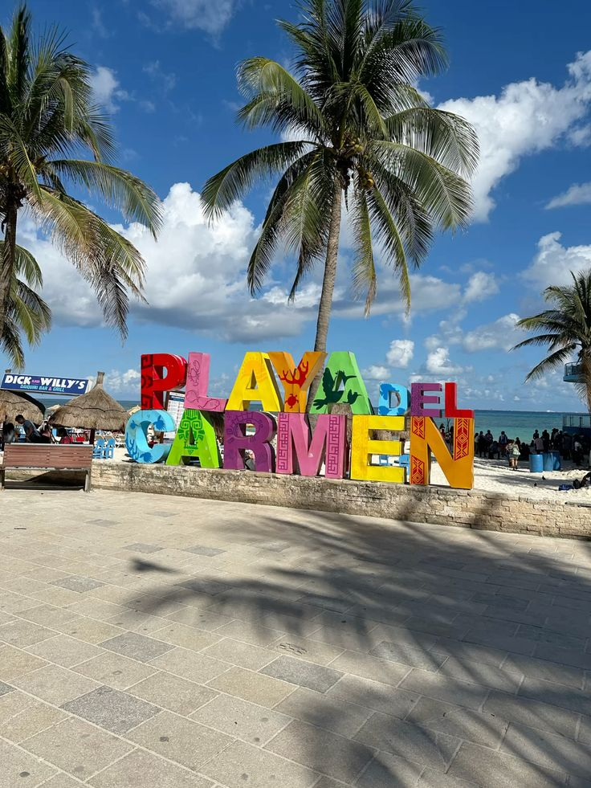
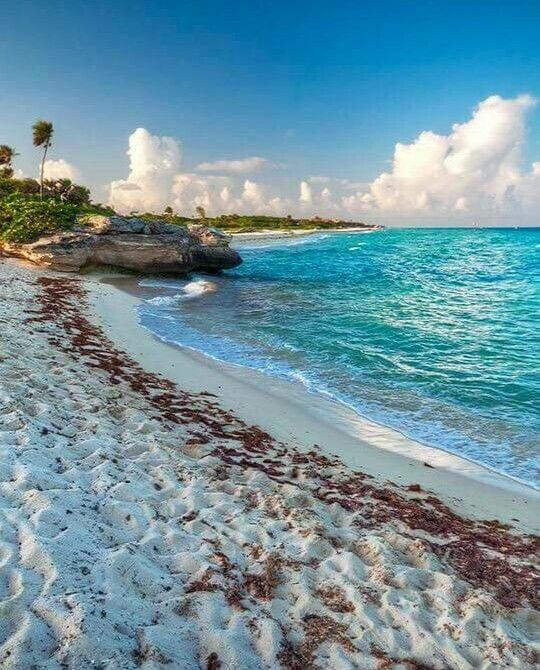
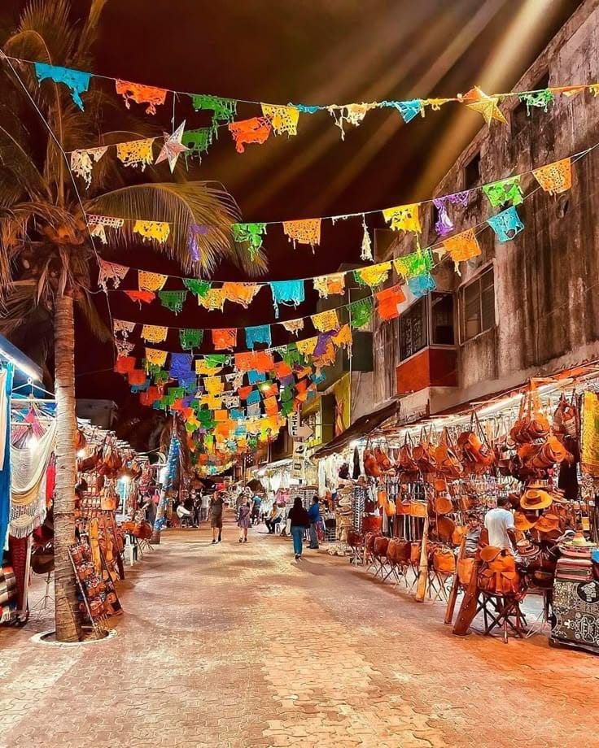
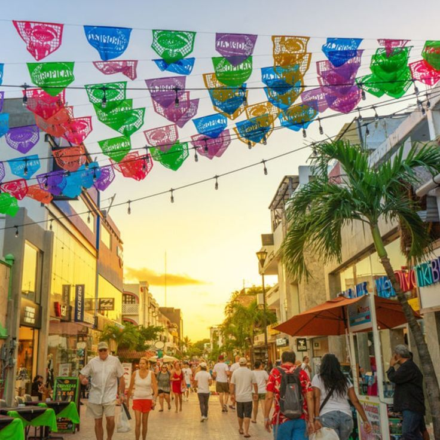
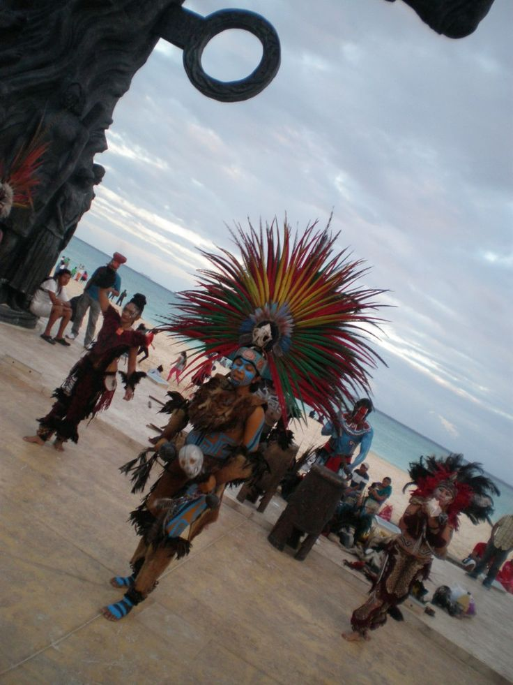
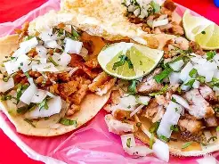
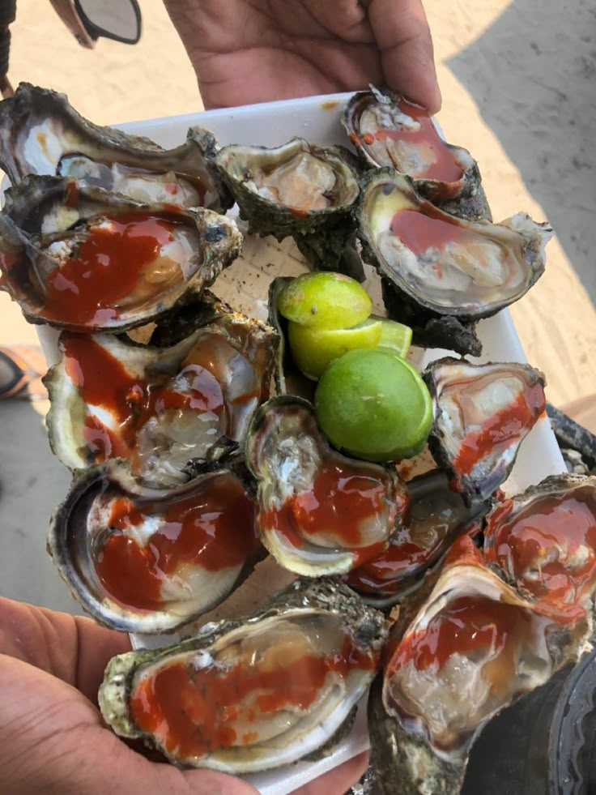
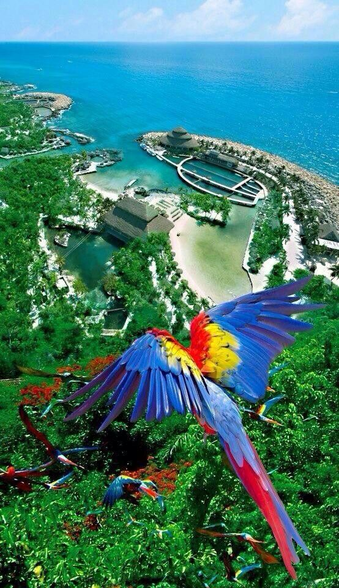
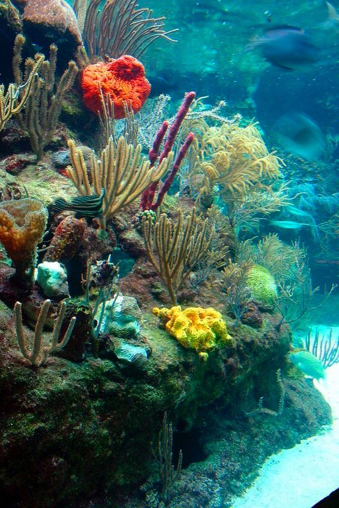
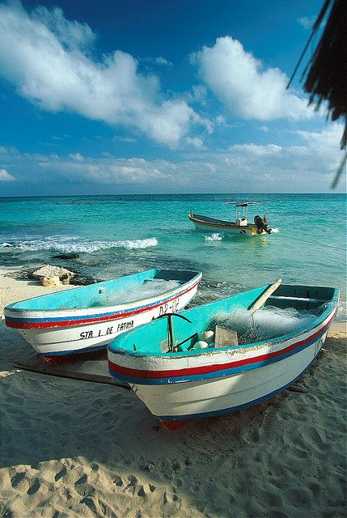

Playa del Carmen es uno de los destinos turísticos más importantes de México, ubicado en el Caribe mexicano. Es famoso por sus playas de arena blanca y aguas cristalinas.


Playa del Carmen es uno de los destinos turísticos más importantes de México, ubicado en el Caribe mexicano. Es famoso por sus playas de arena blanca y aguas cristalinas.


Este destino pertenece al estado de Quintana Roo y forma parte de la Riviera Maya. Su clima es cálido durante casi todo el año, lo que lo hace ideal para vacacionar.
Además, cuenta con una gran variedad de hoteles, restaurantes y actividades recreativas.


Entre los lugares más visitados se encuentra la Quinta Avenida, un paseo lleno de tiendas, restaurantes y vida nocturna.
También destacan los cenotes cercanos y parques ecológicos.

La gastronomía combina sabores tradicionales mexicanos con cocina internacional.
Se pueden encontrar platillos como tacos, mariscos frescos y comida típica de la región.





Playa del Carmen es un destino ideal para disfrutar de la naturaleza, la cultura y la diversión. Es perfecto para vacacionar en familia o con amigos.